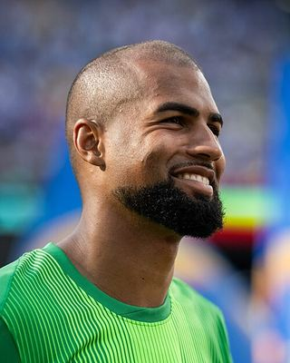

Ezzcoins › Player pages › Robert Sánchez

80
GK

Robert Sánchez
DIV81
HAN78
KIC78
REF81
SPD53
POS79
PlayStyles
FootworkCross ClaimerRobert Sánchez
80 GK · Como 1907 · Serie A Enilive ·  Spain
Spain
850Recent console price
79Meta rating · GK −1 vs overall
GK79
DIV81
HAN78
KIC78
REF81
SPD53
POS79
Chemistry style
Turn on JavaScript to see this card with each chemistry style.
- Position
- GK
- Club
- Como 1907
- League
- Serie A Enilive
- Nation
- Spain
- Skill moves
- 1★
- Weak foot
- 3★
- Preferred foot
- Right
- Height
- 197 cm
- Age
- 28
- Full name
- Robert Lynch Sánchez
Meta rating: Ezzcoins' own estimate of how well this card plays in game, worked out from its stats for each position it can play, its skill moves, weak foot and PlayStyle+. An average card scores about its overall rating; higher means it plays above its rating.
Watch on EzzcoinsMore from Como 1907
- 84
 Nico PazCAM
Nico PazCAM - 82
 Moise KeanST
Moise KeanST - 81Luis MillaCM
- 80
 Trevoh ChalobahCB
Trevoh ChalobahCB - 79
 Martin BaturinaCAM
Martin BaturinaCAM - 78
 Jean ButezGK
Jean ButezGK - 78Lucas Da CunhaCDM
- 78Maxence CaqueretCDM